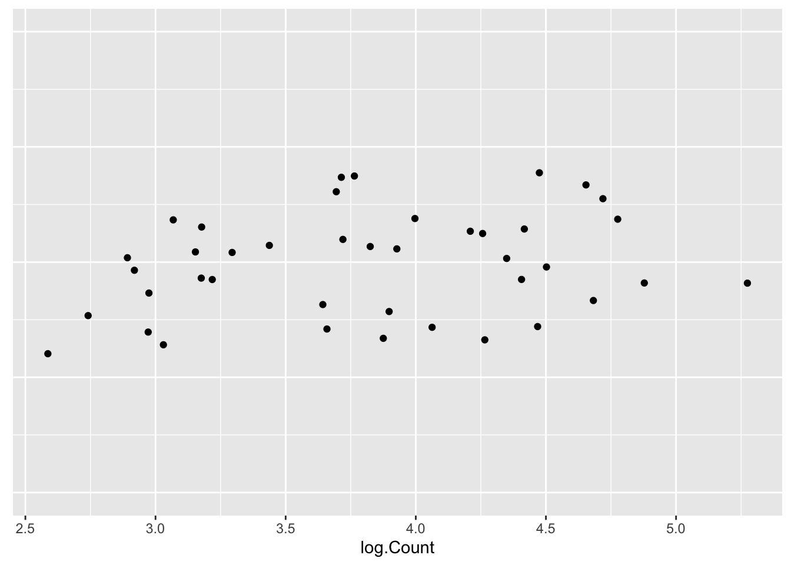
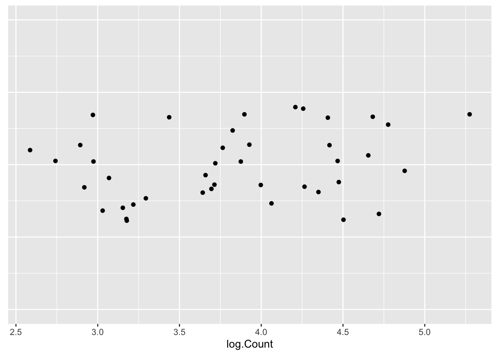

10 Reexpressing for Symmetry II
10.1 Data for the day
Where are the farms in the United States? The 2001 New York Times Almanac gives the number of farms (in 1000’s) for each of the 50 states in 1999 – the data is shown below. We will use this example to illustrate methods for determining the symmetry of a batch and to decide on appropriate reexpressions to make the batch more symmetric.
The dataset farms in the LearnEDA package contains this data. The first few rows are displayed below.
library(LearnEDAfunctions)## Loading required package: dplyr##
## Attaching package: 'dplyr'## The following objects are masked from 'package:stats':
##
## filter, lag## The following objects are masked from 'package:base':
##
## intersect, setdiff, setequal, union## Loading required package: ggplot2head(farms)## state count
## 1 Al 48
## 2 Als 1
## 3 Ar 8
## 4 Ark 49
## 5 Ca 89
## 6 Col 29Here is a stemplot of the data.
aplpack::stem.leaf(farms$count,
unit=10, m=5, trim.outliers=FALSE)## 1 | 2: represents 120
## leaf unit: 10
## n: 50
## 16 0* | 0000000000001111
## (9) t | 222223333
## (12) f | 444444555555
## 13 s | 6677
## 9 0. | 8888999
## 2 1* | 1
## t |
## f |
## s |
## 1. |
## 2* |
## 1 t | 2What do we see? Obviously we note the big outlier at 22 – looking at the data, we see that this corresponds to the number of farms in Texas. Otherwise, we see some right skewness in the data. Next we look at the sequence of midsummaries shown in the letter value display below.
lval(farms$count)## depth lo hi mids spreads
## M 25.5 39.5 39.5 39.5 0
## H 13.0 10.0 65.0 37.5 55
## E 7.0 6.0 84.0 45.0 78
## D 4.0 3.0 91.0 47.0 88
## C 2.5 2.0 104.0 53.0 102
## B 1.0 1.0 227.0 114.0 226The median (39.5) is larger than the mid-fourth (37.5) – this indicates some left-skewness in the middle half of the data. Then the midsummaries increase from the mid-fourth to the mid-extremes – this tells us that the outside half of the data is right-skewed.
10.2 Symmetry plot
We now introduce a new plot to learn about the symmetry of a batch – not surprisingly, this is called a symmetry plot.
To make a symmetry plot …
- First order the n data values – call the ordered values \(y_{(1)}, ..., y_{(n)}\).
- If \(M\) denotes the median then you plot the points \[ u_i = y_{(n+1-i)} - M \, \, ({\rm vertical}) \] against \[ v_i = M - y_{(i)} \, \, ({\rm horizontal}) \] for \(i = 1, ..., n/2\) (or \((n+1)/2\) if \(n\) is odd).
- Add the line \(u = v\) to the graph.
Here is the symmetry plot for the farm numbers. Here we have 50 numbers, so we will plotting 25 \((u, v)\) points.
symplot(farms$count)
How do you interpret a symmetry plot? Some guidelines follow:
If the points fall close to the line \(u = v\), then the data is nearly symmetric.
If the data is left-skewed, then the points fall below the line as follows:
Likewise, if the data is right-skewed, the points fall above the line.
The plot is nondecreasing – the points close to the origin correspond to values of the data close to the median \(M\) and the point on the far right correspond to the extremes.
Let’s return to the symmetry plot for the farm numbers.
If we look from left to right, we first see a number of point under the line \(u = v\), and then we see points above the line. This tells us that there is left-skewness in the middle of the batch and right skewness in the tail portion of the batch. These statements are consistent with what we saw in the sequence of midsummaries.
To remove the right-skewness that we see, we go down the ladder of powers and try power transformations \(p\) that are smaller than \(p = 1\).
10.3 Roots and logs
We first try roots (\(p = .5\)). Below, we show a stemplot, the letter value display and the symmetry plot.
roots <- sqrt(farms$count)
aplpack::stem.leaf(roots)## 1 | 2: represents 1.2
## leaf unit: 0.1
## n: 50
## 5 1 | 00777
## 11 2 | 044668
## 14 3 | 014
## 17 4 | 005
## 24 5 | 0023457
## (6) 6 | 234579
## 20 7 | 0002466
## 13 8 | 00889
## 8 9 | 014558
## 2 10 | 4
## 11 |
## 12 |
## 13 |
## 14 |
## 1 15 | 0symplot(roots)
What do we see in the displays?
- Stemplot Here the roots look pretty uniform distributed from 0 to 100. Looking more carefully, I see some left-skewness in this 0-100 region. Also there is one outlier at the high end.
- Letter-value display Actually, there is only a small trend, if any, in the sequence of midsummaries. There is a drop from the median to the mid-fourth, indicating some left skewness in the middle half of the data. Also, there is an increase from mid-C to mid-extreme, showing some right-skewness in the tails of the batch of roots.
- Symmetry plot Practically all the points fall under the line \(u = v\) indicating left-skewness in the middle portion of the data. The only point above the line is at the far right, which is a reflection of the single outlier.
Let’s continue down the ladder of powers and try the \(p = 0\) power (logs). Again, we show the stemplot, the letter-value display and the symmetry plot.
logs <- log(farms$count)
aplpack::stem.leaf(logs)## 1 | 2: represents 1.2
## leaf unit: 0.1
## n: 50
## 2 0* | 00
## 0. |
## 6 1* | 0003
## 10 1. | 7799
## 14 2* | 0134
## 16 2. | 77
## 24 3* | 02233444
## (10) 3. | 6677888999
## 16 4* | 00011333344
## 5 4. | 5557
## 1 5* | 4symplot(logs)
Here it should be clear that the logs of the farm numbers are left-skewed. The shape of the stemplot is left-skewed. The midsummaries are steadily decreasing and all the points in the symmetry plot are under the line, again reflecting the left-skewness.
10.4 Hinkley’s method
A simple method of finding a suitable transformation, discussed in the last lecture, is based on Hinkley’s \(d\) statistic, which is based on the difference between the mean and median.
Here are the values of the Hinkley statistic for the raw, root and log data.
hinkley(farms$count)## h
## 0.08566038hinkley(roots)## h
## -0.0724257hinkley(logs)## h
## -0.2407449Since the raw data (\(p = 1\)) has a positive value of \(d\) and roots (\(p = .5\)) has a negative \(d\) value, this might suggest choosing a power reexpression (\(p\)) between .5 and 1. In this example, there is not a strong reason to reexpress, and roots might be a little more symmetric than the raw data.
10.5 Matched transformations
We are interested in comparing the effects of taking different reexpressions, such as taking logs and roots. But when we take a reexpression such as log, we mess up the scale of the raw data (logs are much smaller than the raw data), and so it is difficult to make a comparison.
It would be helpful if the raw and reexpressed data were roughly on the same scale so we can easily compare the two datasets. We can accomplish this by means of a procedure called matching.
In the following, we denote our raw data by \(x\) and our reexpressed data by \(y = T(x)\).
Now we know that we can apply a further linear transformation which we can call \[ z = a + b y = a + b T(x) \] The change from \(y\) to \(z\) is a trivial transformation and won’t change the shape of the data.
We want to choose the constants \(a\) and \(b\) so that the \(z\) batch resembles the \(x\) batch. We can accomplish this in many ways. We describe two of them.
10.6 Matching Method 1
Here we choose two values in the raw scale (\(x\)) that will be the same in the new scale (\(z\)). Choose two points \(x_1\) and \(x_2\) in the original scale – the corresponding points in the new scale will be \(z_1\) and \(z_2\). We wish to find values of the constants \(a\), \(b\) so that \[ z_1= a + b T(x_1) = x_1 \] \[ z_2 = a + b T(x_2) = x_2 \]
10.7 Matching Method 2
Here we choose one point that will be same in the raw (\(x\)) and new (\(z\)) scales. Also, by placing a condition on the derivative, we ensure that data close to the chosen value will be the same in the two scales. Choose point \(x_0\) such that \[ z_0 = a + b T(x_0) = x_0 \] and the derivative at z with respect to x at xo is equal to 1 \[ \frac{d}{dx}|_{x_0} = \frac{d[a+bT(x)]}{dx}|_{x_0}= b \frac{d T(x)}{dx}|_{x=x_0} = 1. \] If we solve for \(a\) and \(b\) from the two equations, we get the solution: \[ z = x_0 + \frac{T(x) - T(x_0)}{T'(x_0)}. \] In usual practice, we choose \(x_0\) to be some central value in the raw data such as the median.
In the case of power functions, where the power \(p\) is not zero, \[ T(x) = x^p, \] and the matching reexpression is \[ z = x_0 + \frac{x^p - x_0^p}{p x_0^{p-1}}. \] In the case of the log (base 10) reexpression where \(T(x) = log(x)\), the matching transformation has the form \[ z = x_0 + \frac{\log(x) -\log(x_0)}{\log(e)/x_0}. \]
Let’s illustrate matching for our farm numbers example. We use the second matching method and let \(x_0 = 39.5\), the median of the raw data. Using the above equations, we calculate the matching root and log transformations in R:
matched.roots <- 39.5 + (sqrt(farms$count) -
sqrt(39.5)) / (.5*39.5 ^ (-.5))
matched.logs <- 39.5 + (log10(farms$count) -
log10(39.5)) / (log10(exp(1)) / 39.5)These calculations can also be done using the function mtrans in the LearnBayes package:
raw <- farms$count
matched.roots <- mtrans(raw, 0.5)
matched.logs <- mtrans(raw, 0)To compare the raw, matched roots, and matched logs, we use parallel boxplots shown below.
boxplot(data.frame(raw, matched.roots, matched.logs))
Note that this matching has given the three batches the same median (\(x_0\)) and the batches have similar spreads. We can focus on the shapes of the batches that is indicated by the position of the median within the box and the lengths of the whiskers.
What do we see in this boxplot display?
- Looking at the raw (farms) data, the middle 50% of the data looks pretty symmetric and there is right skewness in the tails.
- The roots are more symmetric in the tails, but this is offset by some left skewness in the middle 50%.
- The logs look left skewed both in the middle 50% and the tails.